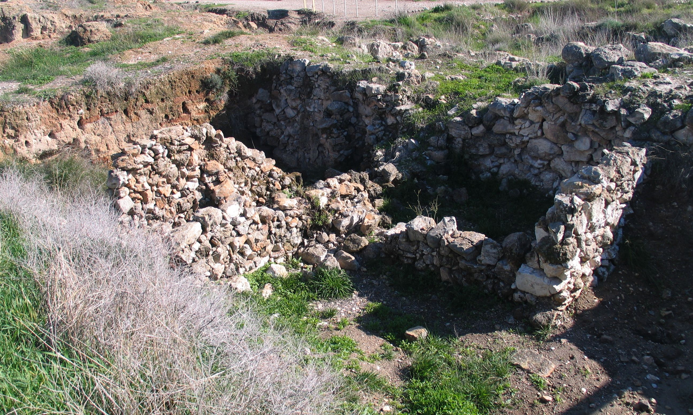

Gezer (Ancient City)

A fortified Canaanite and Israelite city on the Shephelah ridge between the coastal plain and the Judean hills, midway between Jerusalem and Tel Aviv, occupied for over 3,000 years. Its remains include Middle Bronze Age fortifications and a row of standing stones, a large rock-cut water system descending to groundwater inside the defences, inscribed boundary stones ('boundary of Gezer') that made it the first positively identified biblical city, and a six-chambered gate joined to a casemate wall, matching the gates at Hazor and Megiddo. This entry covers the city, gate and water system only; the Gezer Calendar has its own entry.
Interpretations
The city's identification is certain (boundary stones). The gate's date is debated: Yadin's 10th-century Solomonic date, linking Gezer, Hazor and Megiddo to 1 Kings 9:15, is contested by low-chronology scholars favouring the 9th century BC; recent radiocarbon work has been cited for the 10th century, and the question is not settled. The water system's date is likewise disputed (Middle Bronze Age origin argued in recent work, against earlier Late Bronze or Israelite dates).
Scripture Illuminated
Biblical Significance
Gezer is the city Joshua could not fully take (Joshua 16:10), that Pharaoh captured, burnt and gave to Solomon as his daughter's dowry, and that Solomon rebuilt (1 Kings 9:16-17) — the same verse that names Hazor and Megiddo beside it. Standing in its gate, with its water shaft below, is standing in the fortified world of 1 Kings 9:15, whatever century the gate itself is finally dated to.